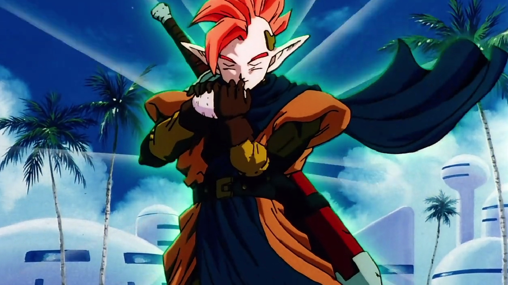
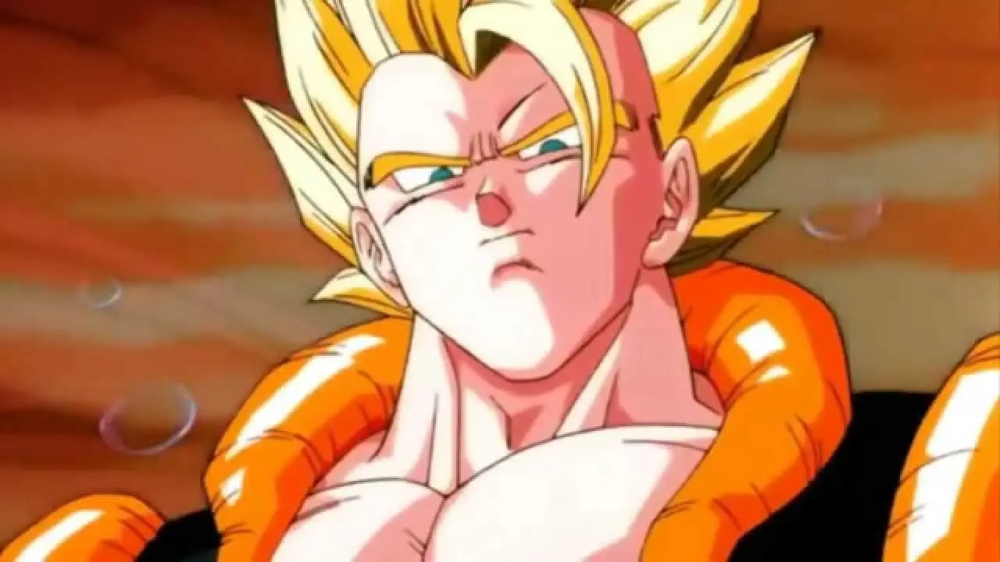

En la Tierra, una nave espacial interrumpe un pícnic y un ejército de soldados alienígenas humanoides recibe a Vegeta como su rey. Su líder se revela como un Saiyajin llamado Paragus que afirma haber creado un Nuevo Planeta Vegeta y desea que Vegeta le acompañe para asumir el trono como rey de los Saiyajin. Vegeta acepta después de que Paragus le diga que el Super Saiyajin Legendario está corriendo por toda la galaxia y debe ser detenido. Gohan, Trunks del Futuro, Krilin, el Maestro Roshi y Oolong acompañan a Vegeta a la nave.
En el Nuevo Planeta Vegeta, Vegeta se encuentra con el hijo de Paragus, Broly, que se une a él para rastrear al Super Saiyajin en otros planetas. Gohan, Trunks y Krilin exploran Nuevo Vegeta y descubren que está deshabitado, excepto por los esclavos alienígenas que revelan que un Super Saiyajin arrasó con su civilización. Los amos de los esclavos comienzan a abusar de ellos pero son defendidos por Gohan cuando llega Goku. Paragus saluda a Goku y éste les invita a cenar en el palacio donde Broly aparece agitado con sólo ver a Goku. Paragus calma a su hijo utilizando un dispositivo en su brazalete que se sincroniza con la diadema de Broly y, sin embargo, a pesar de esto, Broly ataca a Goku en medio de la noche requiriendo que Paragus calme a su hijo una vez más. Goku sospecha que Broly es un Super Saiyajin y Paragus contempla el dispositivo de control mental y sospecha que está funcionando mal debido a que Broly responde agresivamente a Goku. Paragus teoriza que los violentos instintos Saiyajin de Broly están despertando como resultado del poder de Goku, y luego recuerda que nacieron el mismo día en un intento de explicar su encuentro predestinado después de todos estos años.
Goku y los demás se enfrentan a Paragus al conocer la verdad sobre Broly mientras su agresividad hacia Goku aumenta hasta el punto de liberarse del dispositivo de control mental y finalmente se transforma en un monstruo lleno de rabia: el Super Saiyajin Legendario.
Desde su nave espacial, Cooler observa cómo su hermano menor Freezer destruye el mundo natal de los Saiyajin. Los secuaces de Cooler observan una cápsula que huye del planeta condenado que está transportando a un bebé Saiyajin a la Tierra y se preparan para destruirla, pero Cooler la deja marchar, alegando que es responsabilidad de Freezer. Treinta años después, este Saiyajin, Goku, derrota a Freezer en el Planeta Namek. Tras enterarse de la muerte de su hermano, Cooler lleva a su Escuadrón Blindado -Salza, Neiz y Doore- en una misión para reclamar el honor de su familia. En la Tierra, las fuerzas de Cooler tienden una emboscada a Goku y sus amigos mientras están de acampada, y Goku resulta gravemente herido cuando recibe una ráfaga de energía de Cooler que estaba destinada a Gohan.
Una familia adinerada organiza un torneo intergaláctico de artes marciales en la Tierra en el que compiten luchadores de toda la galaxia como Gohan, Piccolo, Trunks del Futuro, Ten Shin Han, Yamcha y Krilin. Todos menos Yamcha (que cayó de la arena) avanzan sin esfuerzo para preocupación de Mr. Satán, que los reconoce de la batalla contra Cell y sabe que tendrá que enfrentarse a cualquiera de ellos que gane. En las semifinales, Trunks lucha contra Ten Shin Han y lo derrota y Piccolo se molesta por la falta de desafío y abandona contra Krilin. Gohan, Trunks y Krilin pasan a la final, donde cada uno de ellos se enfrenta a un luchador alienígena. Sin embargo, cuando los luchadores alienígenas son revelados, el promotor de la lucha se da cuenta de que estos no son los falsos alienígenas que reclutó para el evento. Trunks es desafiado por un guerrero alienígena que usa la espada llamado Gokua, Krilin es derrotado por una alienígena femenina llamada Zangya, Gohan se enfrenta al misterioso alienígena Bujin, y otro concursante del torneo es asesinado por el luchador alienígena Bido. Mientras tanto, tras quejarse de un falso dolor de estómago para evitar el combate, Mr. Satan queda atrapado en una cápsula de transporte y es enviado al campo de batalla.
En un futuro alternativo. Unos años después de la victoria de Goku contra Freezer, éste regresa a la Tierra y sucumbe a una enfermedad viral del corazón. La muerte de Goku (enfrente de las miradas atónitas de sus amigos), al ser el resultado de causas naturales, significa que ya no puede ser revivido con las Dragon Balls. Seis meses después, Piccoro, Vegeta, Krillin, Ten Shin Han, Yamcha y Chaoz son asesinados por el Androide N°17 y la Androide N°18. Con la muerte de Piccoro, el guardián de la Tierra, Kamisama, muere también y las Dragon Balls quedan inutilizadas de forma permanente, lo que hace imposible que nadie pueda ser revivido.
Bardock intenta atacar a Freezer mientras que el tirano está en el espacio por encima de su nave espacial con Zarbon y Dodoria. Ellos tienen una breve conversación, Freezer dice que está harto de trabajar con los Saiyajins y lanza una Death-Ball que hace estallar el planeta Vegeta, después de esto Bardock despierta en una cama en un planeta cuyo cielo se parece mucho al planeta Vegeta, él está siendo curado por dos extranjeros: Ipana, el médico de la aldea, y su hijo Berry. Bardock observa que el medicamento utilizado para curarlo es similar a la del líquido en tanques de curación, luego Ipana dice que el nombre del planeta es planeta Plant, Bardock recuerda que ese era el antiguo nombre del Planeta Vegeta y comienza a preguntarse si él está en el pasado.- Dos soldados llamados Toobi y Kyabira llegan en una nave espacial y declaran que van a conquistar el planeta Plant. Bardock se enfrenta y mata a Kyabira con una patada fuerte en la cara. Un enfurecido Toobi trata de golpear Bardock, pero el saiyajin lo esquiva y lo mata. El alcalde y los vecinos a darle las gracias, pero Bardock, sin mostrar mucho interés por ellos, vuela lejos para descansar en una cueva. Berry llega a la cueva con una cesta de comida y le dijo a Bardock que lo tomara. Al principio, Bardock le pide que lo deje solo, pero finalmente se come la comida que Berry le ofreció. Más tarde Berry vuelve con más alimentos y Bardock parece estar siendo más tolerante con él. Mientras tanto, un miembro de la familia imperial de Freezer, el Capitán Chilled, dice que ha pasado 10 días desde que no han oído hablar de Toobi y Kyabira por lo que decide investigar el mismo el planeta Plant.
En un mundo desconocido, un joven humanoide muere aplastado por un monstruo gigantesco que luego desaparece mientras una entidad invisible se ríe y anuncia que se dirige a la Tierra.
En una ciudad de la Tierra, Gohan y Videl, actuando como sus personajes superhéroes Gran Saiyaman y Gran Saiyaman 2, impiden que un anciano se suicide. El hombre se presenta como Hoi y les entrega una caja de música encantada, afirmando que un héroe llamado Tapion está atrapado en su interior y que es su única oportunidad para detener un mal que se aproxima. Una vez agotados todos los demás métodos para abrir la caja, se reúnen las Bolas de Dragón y se utiliza un deseo al dragón Shenron para abrirla. Tapion es liberado pero expresa su ira por haber sido liberado, explicando que en su interior se encuentra la mitad del feroz monstruo llamado Hildegarn que sólo la caja mantenía a raya. Tapion huye al aislamiento pero es visitado por Trunks que le toma cariño. La mitad inferior de Hildegarn no tarda en aparecer y comienza a atacar la ciudad. Gohan y Videl intentan luchar contra él hasta que Tapion toca una melodía en su ocarina que debilita a Hildegarn y hace que se desvanezca. Hoi afirma que Tapion es la verdadera amenaza y que la ocarina debe ser destruida, por lo que intenta robar el instrumento y, en la refriega que se produce, Trunks se apodera de él y opta por ponerse del lado de Tapion. Hoi huye y Tapion acepta a Trunks como amigo.

El Guerrero Legendario Tapion.
2:La Fusión De Goku y Vegeta
En el Otro Mundo, un oni adolescente vigila una máquina de limpieza de espíritus y el fuerte volumen de su walkman le distrae haciendo que la máquina explote. El oni es engullido por la esencia espiritual maligna liberada y se transforma en un enorme monstruo infantil con habilidades de manipulación dimensional. Como resultado, los difuntos resucitan y regresan al mundo de los vivos, mientras que en el más allá, los espíritus que pudieron conservar sus cuerpos los pierden.
Goku y Paikuhan están luchando en un torneo cuando son interrumpidos por la aparición de una extraña sustancia parecida al cristal y son enviados a investigar la perturbación por el Gran Kaiosama. Descubren que la "estación de registro" de la otra vida está encerrada en una barrera de cristal que también es inmune a sus ráfagas de energía. Desde el interior de la estación, el Gran Rey Enma, su ayudante atrapado, les dirige hacia el monstruo Janemba, que se niega a abandonar la barrera. Goku atrae a Janemba al infierno mientras Paikuhan trabaja para liberar al Gran Rey Enma.

La Fusión de Goku Y Vegeta: Gogeta
1:Dragon Ball Super: Broly
La anexión del Planeta Vegeta se transmite del señor de la guerra galáctico King Cold a su hijo, Lord Freezer. El Rey Vegeta, gobernante de los Saiyajin, cree que su hijo, el Príncipe Vegeta, está destinado a liberar a su raza de Freezer y gobernar el universo. Se entera de la existencia de Broly, un niño Saiyajin nacido con un nivel de poder superior al de su hijo, y exilia a Broly al lejano Planeta Vampa, donde él, junto con su padre Paragus, quedan varados después de que sus naves espaciales resulten dañadas. Paragus jura criar a Broly para vengarse del Rey Vegeta. Cinco años después, un guerrero Saiyajin de clase baja llamado Bardock se preocupa por la maldad de Freezer y envía a su hijo pequeño, Kakarotto, a la Tierra. Sus temores se hacen realidad cuando Freezer destruye el Planeta Vegeta tras conocer la leyenda del Super Saiyajin que teme que algún día pueda aparecer para desafiarle. El genocidio de la raza Saiyajin ocurre con solo Broly y Paragus, Kakarotto y su hermano Raditz, Vegeta y su camarada Nappa, y el hermano de Vegeta, Tarble, sobreviviendo a la destrucción.